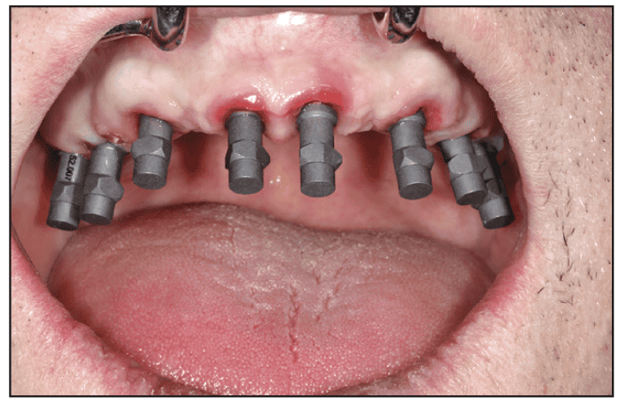

Share Hub — اصول کلیدی برای بهینهسازی دقت اسکن داخل دهانی در ایمپلنتها

با گسترش استفاده از اسکنرهای دیجیتال، این تصور شکل گرفته که «اسکن داخل دهانی» فرآیندی ساده و بدون نیاز به مهارت تخصصی است. اما همانند قالبگیری سنتی، این فرایند بر اساس اصولی مشخص بنا شده است و رعایت صحیح این اصول برای دستیابی به دقت قابل قبول ضروری است (Accumulated distortion). هدف این مرور، بررسی عوامل کلیدی است که نقش مهمی در بهینهسازی دقت اسکن دارند (Guide to Optimizing the Accuracy of Intraoral Implant Scans: A Review Article – Çise Özal).
نه عجله بیهدف، نه مکثهای طولانی
اسکن باید پیوسته و یکنواخت انجام شود. اسکن یکنواخت و سریعتر باعث کاهش تعداد فریمهای اضافی میشود؛ زیرا فریمهای کمتر یعنی فرآیند همپوشانی سادهتر و کاهش Distortion تجمعی. برعکس، مکثهای طولانی یا حرکات نامنظم باعث تولید فریمهای بیشتر، دشواری در مطابقت تصاویر و کاهش دقت نهایی اسکن میگردد.
حد و مرز منطقی اسکن
زمانی که فقط به اطلاعات یک کوادرانت نیاز داریم، محدود کردن اسکن به همان ناحیه موجب افزایش دقت میشود. در اسکنهای کامل قوس، تعداد فریمها و میزان همپوشانی افزایش یافته و احتمال Distortion تجمعی بالا میرود.
نور محیط را کنترل کنید
شدت بسیار زیاد یا خیلی کم نور باعث بازتاب و نویز میشود و دقت تطابق تصاویر را کاهش میدهد. طبق شواهد این مقاله، بهترین شرایط زمانی است که چراغ یونیت خاموش باشد و تنها نور اتاق فعال باشد؛ این حالت دقت اسکن را بهطور قابل توجهی بهبود میدهد.
فقط اطلاعات لازم را اسکن کنید
اسکن بخشهایی که ضرورت ندارند (مثل کامهای بلند) میتواند دقت را کاهش دهد. در صورت عدم نیاز، کام، اسکن نشود تا از افزایش Distortion غیرضروری جلوگیری شود.
سایز تیپ اسکنر و دقت
اسکنرها با تیپهای مختلف عرضه میشوند. تیپهای بزرگتر معمولاً تصاویر کمتری تولید میکنند که این موضوع به افزایش Precision و Trueness کمک میکند. روند کلی نشان میدهد: Head بزرگتر → اسکن پایدارتر → خطای تجمعی کمتر. در نواحی وسیعتر، تیپهای بزرگتر غالباً دقت بالاتری ارائه میدهند.
انتخاب مناسب اسکنبادی
طبق نتایج مقاله، اسکنبادیهای فلزی پایداری ابعادی بیشتری دارند و دقت بالاتری ارائه میدهند. در مقابل، اسکنبادیهای PEEK ممکن است در اثر سفتکردن پیچ یا استریلیزاسیون دچار تغییر شکل شوند و استفاده مکرر از آنها میتواند دقت ثبت ایمپلنت را کاهش دهد؛ بنابراین استفاده از آنها باید محدود و کنترلشده باشد.
فاصلهٔ تیپ تا سطح اسکن
هر اسکنر فاصلهٔ ایدهآل مشخصی دارد. دور شدن یا خیلی نزدیک شدن تیپ به این فاصله باعث کاهش دقت میشود. در مطالعه Miyoshi نشان داده شد که با افزایش فاصله، Precision بهطور محسوسی افت کرد. فاصلهٔ ثابت و کنترلشده مطابق دستور سازنده باید حفظ شود تا از نویز، از دست رفتن جزئیات یا افزایش Distortion جلوگیری شود.
خشکی ناحیه اسکن برای دقت ضروری است
وجود بزاق یا خون الگوی نوری اسکن را مختل میکند، نقاط مرجع را تضعیف میسازد و فرآیند تطبیق تصاویر را دچار خطا میکند. پیامد این شرایط کاهش قابل توجه دقت اسکن و افزایش احتمال Distortion در برداشت دیجیتال داخل دهان است.
Guide to Optimizing the Accuracy of Intraoral Implant Scans: A Review Article:Çise Özal